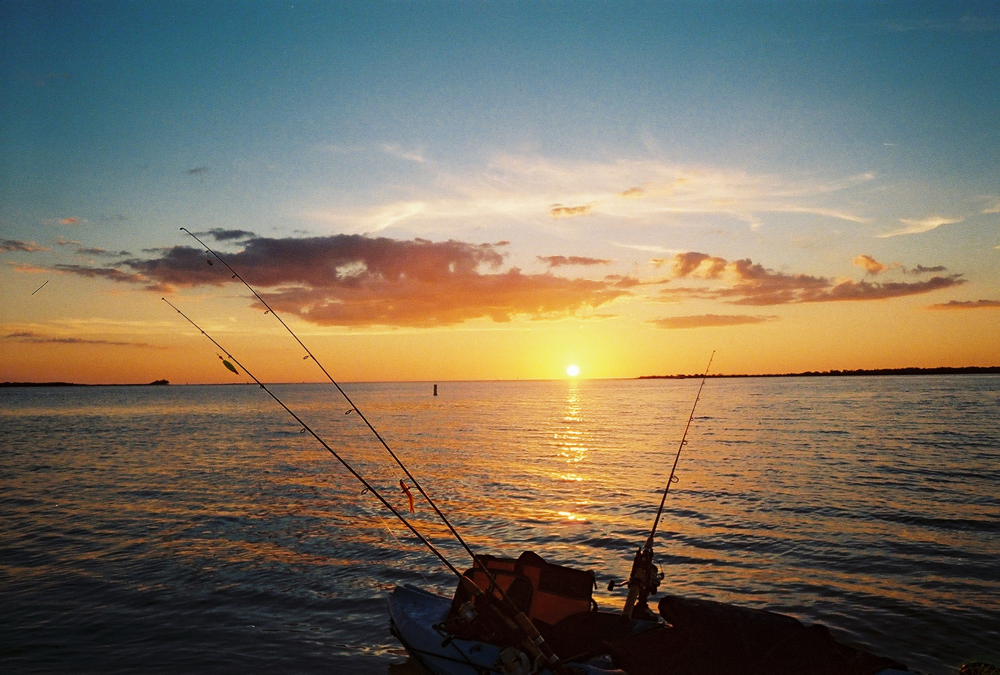

PA-1
Provide for and manage recreational uses of the bay
OBJECTIVES:
Provide adequate and appropriate public access to the bay, and support responsible recreational use and enjoyment.
STATUS:
New Action
BACKGROUND:
Tampa Bay is renowned for its spectacular waters, bay habitats and fish and wildlife. It provides popular recreational opportunities to residents and visitors alike and is foundational to the community’s quality of life. Every year, tourism and recreation in Tampa Bay generate 47,704 jobs that produce over $1.6 billion in personal income, resulting in $4.8 billion in total output (Todd, Walsh, and Neville 2023).
Todd, A., H. Walsh, and J. Neville. 2023. “2023 Economic Valuation of Tampa Bay.” 09-23. St. Petersburg, Florida: Tampa Bay Estuary Program. https://drive.google.com/file/d/15zetRgrFKkWah9KAY1in7q0so8ywHzkA/view?usp=drive_link.
Over 3 million residents call the Tampa-St. Petersburg-Clearwater Metropolitan Area home. Another 5 million people visit the area each year. Continued growth of resident and tourist populations will create challenges for managers to ensure adequate and appropriate public access, while managing suitable and responsible recreational uses, natural resource protection and user conflicts.

Providing adequate and appropriate access to recreational opportunities in Tampa Bay is essential to supporting the economy and quality of life of residents. Nurturing interest and personal connections to the bay is important to building public support and partnerships for community-based stewardship. In addition, preserving coastal habitats and open space will be critical over the long term for maintaining options to adapt and respond to sea level rise and other climate change stressors.
Private ownership and development of bay shorelines must be balanced with adequate opportunities for public access in appropriate locations. Recreational opportunities should be accessible to residents of all physical abilities and income levels; important fishing piers and shoreline fishing areas, for example, have been lost in recent years, decreasing opportunities for anglers without boats.
Cities like Tampa, Bradenton and St. Petersburg are leveraging their public waterfronts as recreational and cultural centerpieces and seeking to expand access to them. Use of the area’s impressive network of city, county, and state parks and conservation lands is increasing as the region’s population surges. Encroaching development presents challenges in maintaining the integrity of these green spaces. Furthermore, conservation and recreation lands are often managed by the same staff, creating potential conflicts in stewardship of those lands.
The State of Florida, Southwest Florida Water Management District (SWFWMD) and local government land-buying programs in Hillsborough, Pinellas, Manatee and Pasco Counties work to secure public access and responsible recreational opportunities in Tampa Bay.

The State of Florida has a long history of citizen-driven and bipartisan political support for purchasing conservation land. The Florida Legislature created the Land Acquisition Trust Fund in 1963 to acquire and improve natural areas, including conservation easements, wildlife management areas, wetlands, forests, beaches and shores, recreation trails and parks, urban open space and lands protecting water. The Fund also improves public access and recreational use of conservation lands.
Florida Forever, the state’s signature conservation and recreation lands acquisition program, together with its predecessor Preservation 2000, has purchased more than 2.4 million acres of environmentally sensitive and recreational lands. On average, these programs spent $275 million a year from 1990 to 2008. In 2009, the Legislature did not fund Florida Forever, and between then and 2016 an average of only $129 million per year has been allocated to the program, despite a large back-log of priority projects.
In 2014, seeking to restore greater funding for acquiring conservation lands, 75% of Florida voters approved an amendment to the Florida Constitution to direct 33% of net revenue from the existing excise tax on documents to the Land Acquisition Trust Fund. Despite this historic intervention, funding for acquisition and restoration of conservation and recreation lands has not increased.
In recent years, most acquisition within the Tampa Bay watershed has been accomplished by Southwest Florida Water Management District (SWFWMD) or local government partners:
- Every year, about 2.5 million people visit public conservation lands acquired by the SWFWMD and its partners to protect Florida’s water resources. Many state and local parks are owned by SWFWMD and managed cooperatively for recreational uses with local or state government agencies. Those uses are as wide-ranging as hunting, hiking, wildlife watching, bicycling and picnicking.
- Hillsborough County’s nationally recognized, voter-approved Jan K. Platt Environmental Lands Acquisition and Protection Program (ELAPP) manages more than 61,000 acres of environmentally sensitive wildlife habitat and corridors. ELAPP is the largest local environmental land acquisition program in Florida.
- Manatee County has provided notable leadership in expanding its popular network of coastal nature preserves, such as Perico, Robinson, Neal, Rye and others. Manatee also has constructed dedicated nature centers that offer citizens opportunities to learn about and enjoy bay habitats and wildlife. In 2020, Manatee County residents passed a referendum to “finance the acquisition, improvement, and management of land to protect drinking water sources and water quality, preserve fish and wildlife habitat, prevent stormwater runoff pollution, and provide parks” with 71% voter approval.
- Pinellas County has a parks network that is a model nationwide, and its two major preserves, Brooker Creek and Weedon Island, provide access to the largest remaining tracts of undeveloped land in the county. Large education centers at Brooker Creek and Weedon Island deliver a variety of educational programs and guided outdoor experiences, and support training for participatory science monitoring efforts. In FY 2015, Brooker Creek Preserve hosted 21,158 visitors to its Education Center and 6,315 program attendees. Weedon Island Preserve hosted 12,391 visitors at the Education Center and 5,114 program participants.
Boat ramps are typically funded by local governments and the state Boating Improvement Trust Fund. Local governments have expanded existing ramps with additional launch bays (e.g., Fort De Soto and Salty Sol at Gandy Bridge); however, on fair-weather weekends the ramps are often full to capacity, so more ramp capacity or additional access points will be needed to satisfy demand.
The Florida Fish and Wildlife Conservation Commission (FWC) maintains an online Public Boat Ramp Finder, which provides important information for hundreds of boat ramps in Florida. The Finder includes information about 44 ramps in Pinellas County, 22 in Manatee County, 33 in Hillsborough County and 13 in Pasco County. The Tampa Bay Boating and Angling Guide also lists boat ramps and marinas. Bay Area counties provide web-based maps and information about paddling trails and kayak launch sites.
FWC’s Boating and Waterways Section works to identify sites for potential new boat ramps and those in need of renovation or expansion. FWC also builds and renovates boat ramps on state-owned lands and administers grant programs for ramps and other boating-related activities. Identifying sites for new boat ramps must take into consideration potential impacts to adjacent natural areas, as well as proper storage of waste, fuels and oil from vessels (see Action PH-5). Prioritizing areas where shoreline or development impacts have already occurred is one solution.
The federal Sport Fish Restoration Act uses taxes collected on fishing tackle and motor fuels and import duties on tackle and yachts to fund research, management and development of activities related to sport fishing and boater access. Federal law stipulates that 15% of these funds go to building and repairing boat ramps. Some funds are also used for boater and angler education.

A wide range of recreational opportunities exist in Tampa Bay, including wildlife viewing and photography, boating, kayaking, paddle-boarding, fishing, diving and snorkeling. Public land managers address issues as diverse as illegal hunting and fishing; damage to plant and wildlife from users who ignore access restrictions and stray from marked trails; illegal dumping; and release of unwanted pets and/or invasive species into conservation areas. Emerging issues include use of drones that may disturb wildlife or recreational users.
Programs such as “Leave No Trace,” managed by the Center for Outdoor Ethics, teach people how to enjoy the outdoors responsibly. Trainings are regularly offered in the bay area, targeting formal and informal outdoor educators who can magnify the messaging through their interaction with the public. Increased use of “virtual” tours may provide no-impact access to particularly sensitive lands, while cultivating stewardship among people who might not otherwise be engaged.
The Florida Master Naturalist Program is an adult education UF/IFAS Extension program that offers specific modules in coastal, upland and freshwater systems. The in-depth training sessions are open to anyone and are offered regularly in the Tampa Bay watershed. Participants receive certification as a Florida Master Naturalist. The program supports a growing network of dedicated informed citizens who use and share what they have learned as volunteers, ecotourism guides, field trip leaders and ambassadors for protection and responsible use of waters, wetlands and woods.
Wildlife viewing is a popular activity to learn about and promote conservation. However, irresponsible viewing practices can disturb and injure animals and impact sensitive habitats. For example, birdwatchers and photographers sometimes get too close to colonial nesting birds on mangrove islands. Such disturbance can frighten birds from their nests, exposing their young to the elements and predation. It can even cause birds to abandon nests permanently (see Action FW-6 for other concerns related to beach-nesting and colonial nesting birds). In 2016, the FWC created and expanded Critical Wildlife Areas (CWA) to protect colonial nesting birds on bay mangrove islands. The Alafia Banks CWA was re-established with 100-foot buffers, the addition of Sunken Island and year-round closure. The Dot-Dash-Dit CWA, three mangrove islands at the mouth of the Braden River, was newly established with 100-foot buffers and seasonal closure.
Ethical standards and best practices for bird photographers are published by the American Birding Association and Audubon. The National Oceanic and Atmospheric Administration (NOAA) publishes guidelines for viewing protected sea turtles and marine mammals, including dolphins and manatees. General guidelines for other wildlife viewing and photography are available from the National Wildlife Federation.

As Florida’s largest open water estuary, Tampa Bay is a boating paradise. According to the Florida Department of Highway Safety and Motor Vehicles, 153,658 boats were registered in Pasco, Pinellas, Hillsborough and Manatee Counties in 2022. Improper boating can damage habitat and harm fish and wildlife. For example, boat groundings and improper anchoring can impact hard bottom habitats (see Action BH-4) and seagrass (see Action BH-3). Excessive wakes can cause shoreline erosion and habitat loss (see Action FW-6). Inattentive operators can run over manatees, dolphins and sea turtles. Fuel spills, improper disposal of wastewater, and marine debris can pollute waterways (see Action FW-1).
Mooring fields provide a mechanism for both increasing and managing boating access. They can reduce boating-related impacts (such as waste discharges and anchoring damage to seagrasses) associated with liveaboards and concentrate boats where essential services are more easily provided. Sarasota and Gulfport have popular mooring fields that are consistently at capacity in the winter, when seasonal boaters arrive. Appropriate siting of mooring fields is critical. DEP recently adopted a new environmental resource general permit for public mooring fields. This rule allows public mooring fields for up to 100 boats under certain conditions, including a demonstration of minimal adverse environmental effect on water resources.
On-water enforcement of environmental regulations is primarily handled by FWC, whose resources are stretched thin (see Action FW-1). As a result, boater education and the adoption of ethical boating practices are key to preventing environmental impacts, before enforcement is necessary.
Marine debris describes any manmade material lost or discarded into the ocean. Roughly 80 percent of marine debris originates from land-based sources; the remaining 20 percent enters the ocean through dumping. The most common marine debris includes plastics, glass, metals, paper, cloth, rubber and wood. Plastics, which are durable and slow to degrade, make up about 60 to 80 percent of floating marine debris. Every year, about 8 million metric tons of plastic become marine debris in the world’s oceans. As plastics degrade, they may release toxic pollution or promote adhesion of toxins to small debris, which can be consumed and accumulate in the marine food chain. Most plastics do not fully degrade in the ocean, but instead break down into smaller and smaller pieces (see Action COC-4).
Marine debris can scour, break and smother important marine habitat. Wildlife can ingest marine debris, causing malnutrition, internal injury or blockage, leading to starvation and death. Wildlife can also become entangled in marine debris, especially derelict fishing gear like abandoned nets, traps and monofilament fishing line, leading to injury, illness, suffocation, starvation and death. Federal law prohibits dumping of any plastic in U.S. waters. Keep America Beautiful Affiliates, Tampa Bay Watch and other local non-profits engage citizen volunteers to clean up marine debris and derelict fishing gear (see Action PE-1).

Florida is world-renowned for its recreational fishing. In 2020, recreational anglers in Florida spent nearly $9.2 billion, supporting more than 80,000 jobs. Overfishing has imperiled many fish populations, resulting in adoption of strict fishing regulations. Both NOAA and FWC promote ethical fishing and boating practices, including catch-and-release of valuable sportfish, proper disposal of monofilament line and tackle, and proper stowage and disposal of trash. The Tampa Bay Estuary Program (TBEP) has been a leader in providing boater and angler education, partnering with FWC, Audubon and other organizations to produce printed and web-based boating and angling guides to the bay; an Ethical Angler Wallet Card showing harvest and bag limits for popular sportfish, in both English and Spanish; and Bay-Friendly Boater Kits coordinated by TBEP’s Manatee Awareness Coalition (see Actions PE-2, FW-1 and FW-6).
Hunting is an important outdoor sport in areas of the bay watershed. As waterfowl populations have increased, duck hunting has become a popular activity in southern Hillsborough County from the Bullfrog Creek area south to the Little Manatee River. Hunters can be important advocates for land acquisition and management; however, conflicts between hunters, fishermen and even waterfront residents in duck-hunting areas will need to be addressed with growth and increased recreational use of the bay’s southeast shore.